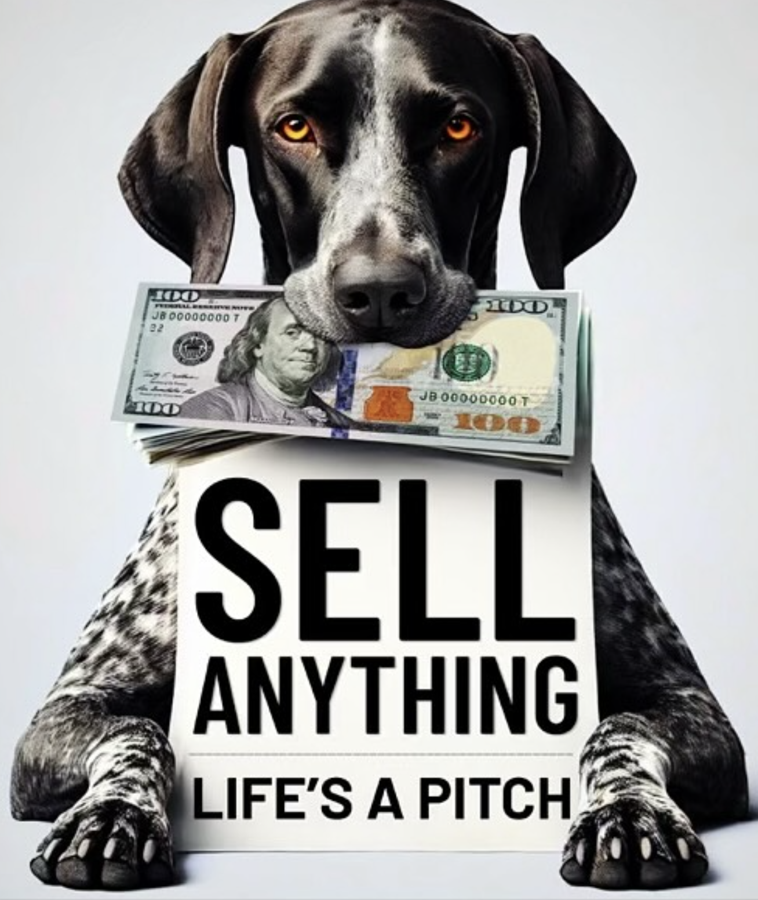

Episode 34 · March 13, 2025 · 3881
(EP:34) JL VanZyverden- Host of "Sell Anything" Podcast we sit down and talk dogs. It's a good one!

About This Episode
JL Vanzyverden the host of "Sell Anything" podcast is a good friend of mine. We sit down and talk dogs. He has the record of the most dogs I have trained for one client and we figure that out in the show. JL came from not much of a childhood to turning into a super successful person finanacially and when it comes to relationships in life. He is just one good dude. He loves dogs, hunting and life. I hope you guys enjoy this one, it was fun to do!
Questions about the training topics in this episode? Tyce works with bird dog owners and hunters through Utah Bird Dog Training. Reach out to work with him directly.
Resources & Links
- Kuranda Dog Beds — Elevated, chew-proof dog beds.
- Utah Bird Dog Training — Tyce's professional training services.
Transcript
Full transcript for Episode 34: (EP:34) JL VanZyverden- Host of "Sell Anything" Podcast we sit down and talk dogs. It's a good one!.
Tyce
Hey folks, welcome to the Bird Dog Podcast. I've got my good friend JL VanZyverden on the show today. JL and I have been working together since 2014 — that's over 11 years and, depending on how you count, somewhere around 10 to 12 dogs. He is one of the people I admire most when it comes to being genuinely enthusiastic about dog training and hunting. JL, welcome to the show.
JL
Tyce, man, thanks for having me. Let's go through the whole list.
Tyce
Fair warning, this is going to take a while. Walk us through the dogs.
JL
Started with Gus and Tara in 2014 — pointer-lab mixes I got with high hopes. Tyce called me two weeks into training and very diplomatically told me they were mediocre at best as bird dogs. I appreciated the honesty. Wasted no time on that. Then came Jake and Chip — the OGs. Jake is still alive. Chip is gone but was one of my all-time favorites. Those two were genuinely great dogs. Then Lady, a female short hair from KSL. She came out of the crate and before I knew what was happening, Jake had gotten to her. She was in heat. I had no idea. That cost us a round of pregnancy-prevention medication shipped in from somewhere unusual. That was a story. Lady was a decent dog, and her nickname is Pig Nose because half her nostril was just missing when she was born. Born that way. Then Aspen, who was from Jake and Lady — and she was a good dog until we lost her to a stomach issue.
Tyce
Tell the audience about Aspen. There's a lesson in there for everyone.
JL
She was in her kennel, had been out training, and when I checked on her she was bleeding from her rear end. Tyce got her to a vet fast. The vet said somehow the artery to her stomach had twisted — the stomach rotated and pinched it off. She didn't make it.
Tyce
The takeaway from that, and this applies to all sporting dogs not just short hairs: be very careful about feeding your dog right before or after heavy exercise. When there's a lot of food in the stomach, it becomes a weight. If that dog is running, jumping, hitting water hard, twisting — that mass can cause the stomach to rotate. We call it bloat or GDV in deep-chested dogs. It's not as common in pointing breeds, but Aspen's case is a reminder that it can happen. At Utah Bird Dog Training we feed in the afternoon, after training, not before. Let the dog work on an empty stomach, then feed. That food gets absorbed through the night, and the dog starts the next morning ready to go again.
JL
After Aspen I picked up Daisy and Cooper, both labs. Got into retrievers partly because I'd started hunting more waterfowl and wanted dogs that were versatile. From there it's kept going — Huck is a short hair I'm really excited about, and Moose is a brown lab out of Daisy who we're training up. He's already earned the name. Ten weeks old, couldn't keep up with the other pups on a rock wall, saw me on the other side, and just sent it — launched off and landed on his head, got up, and ran straight to me. That's a dog you keep.
Tyce
JL, you didn't grow up hunting. That's actually kind of an inspiring part of your story.
JL
My dad was strongly anti-hunting. I'd sneak off with a BB gun and shoot anything I could as a kid. There was a neighbor who ran hounds and I thought it was the coolest thing in the world. A buddy's dad had short hairs, and I thought those dogs were incredible. When I became an adult and finally had the means, I just went and got dogs. I looked back at all those years before I had good trained dogs and thought, what was I doing? You shoot a bird in a dense field and you can't find it without a dog. With a good dog, you go hunt birds and the dog does the work it was built to do. It's just the way the whole thing is supposed to go.
Tyce
Eleven years, twelve dogs. Still hunting, still calling me about new pups.
JL
I told my wife we'd stop at a dozen. We'll see. Thanks for having me on.
About the Host
Tyce Erickson
Tyce Erickson is a professional bird dog trainer and the owner of Utah Bird Dog Training in Utah. For nearly two decades he has worked with pointing dogs, retrievers, and family hunting dogs — helping owners build dogs that are capable and enjoyable in the field. The Bird Dog Podcast is an extension of that work: honest conversations on training, hunting, breeding, and everything that goes into a life spent working dogs.
More About Tyce